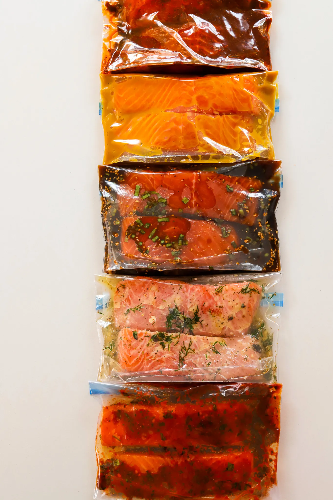
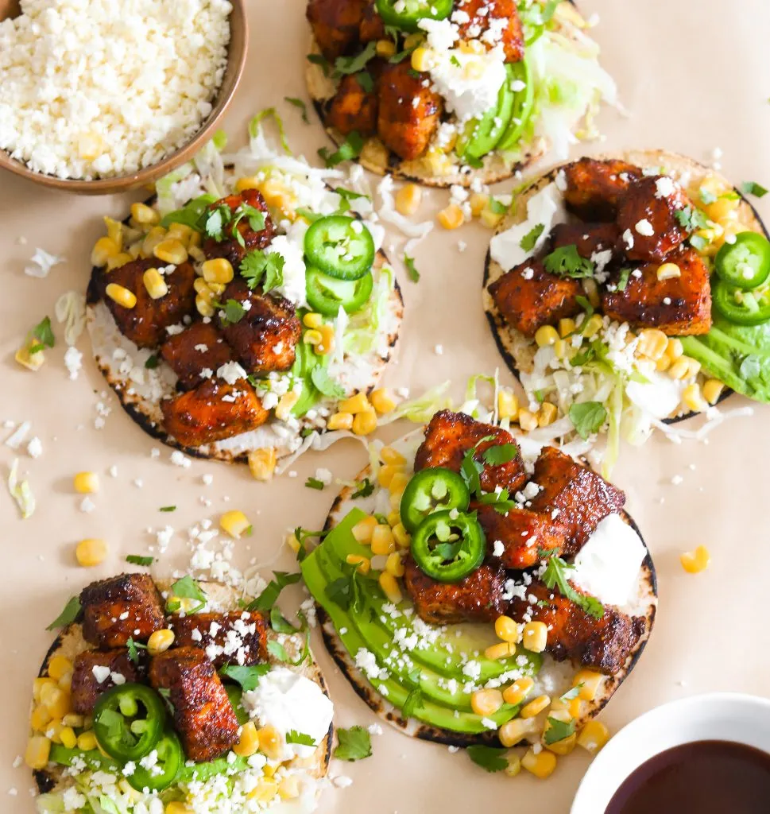
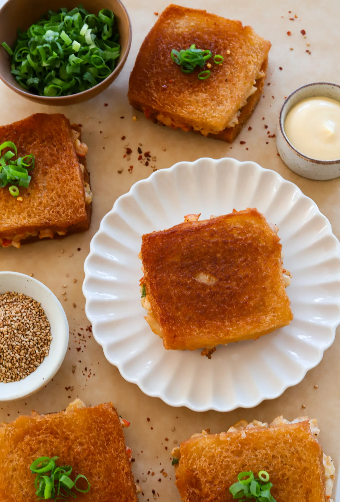

The Healthy Eating Cookbook
Five Salmon Marinades
Total Time: 1 hour
Make 1: Serving
Author: Benjamin Brown

INGREDIENTS
TERIYAKI SALMON
- 1 teaspoon ginger paste
- 2 tablespoons light brown sugar
- 1/4 cup low-sodium soy sauce
- 1 teaspoon sesame oil
- 1/2 tablespoon rice vinegar
- 1/4 teaspoon black pepper
- 1 tablespoon chopped green onions
- 1 teaspoon sesame seeds
GREEK LEMON & HERB
- 2 tablespoons olive oil
- 1 teaspoon fresh dill
- 1 tablespoon lemon juice
- 1 teaspoon minced garlic
- 1 teaspoon fresh thyme
- 1 teaspoon dried oregano
- 1/2 tablespoon Dijon mustard
- /2 to 1 teaspoon salt, adjust to taste
- 1/4 to 1/2 teaspoon black pepper, to taste
MAPLE MUSTARD
- 2 tablespoons maple syrup
- 3 tablespoons dijon or yellow mustard
- 1 tablespoon Worcestershire sauce
- 1 teaspoon minced garlic
- 1/2 to 1 teaspoon salt
- 1/4 teaspoon black pepper
CHIPOTLE ADOBO
- 1 tablespoon olive oil
- 2 tablespoons adobo chipotle paste
- 1 teaspoon fresh garlic
- 1/2 tablespoon chili powder
- 1/2 to 1 teaspoon salt, to taste
- 1 teaspoon coriander
- 1 teaspoon oregano
- 1 teaspoon cumin
- 1/4 teaspoon black pepper
HOT HONEY HARISSA
- 1 tablespoon olive oil
- 2 tablespoons harissa
- 1/2 tablespoon garlic, finely minced
- 1 tablespoon lemon juice
- 1/2 tablespoon parsley, finely chopped
- 1/2 tablespoon cilantro, finely chopped
- 1 teaspoon paprika
- 1/2 teaspoon coriander
- 1/2 teaspoon cumin
- 1/2 to 1 teaspoon salt
- 1 to 2 tablespoons honey, to taste
INSTRUCTIONS
TERIYAKI SALMON
-
In a small bowl, mix ginger paste, garlic paste, light brown
sugar, soy sauce, sesame oil, rice vinegar, and black pepper
.
-
Stir in chopped green onions and sesame seeds.
-
Add two salmon filets into a Ziploc bag, pour the marinade
over,seal, and then freeze.
GREEK LEMON & HERB
-
In a bowl, whisk together olive oil, fresh dill, lemon
juice,minced garlic, fresh thyme, and dried oregano.
-
Add Dijon mustard, salt, and black pepper, adjusting the
seasonings to taste.
-
Add two salmon filets into a Ziploc bag, pour the marinade
over, seal, and then freeze.
MAPLE MUSTARD
-
Combine maple syrup, Dijon or yellow mustard,Worcestershire
sauce, and minced garlic in a bowl.
-
Season with salt and black pepper, adjusting to your
preference.
-
Add two salmon filets into a Ziploc bag, pour the marinade
over,seal, and then freeze.
CHIPOTLE ADOBO
-
In a small bowl, mix olive oil, adobo chipotle paste, fresh
garlic, and chili powder.
-
Add salt, coriander, oregano, cumin, and black pepper.
-
Add two salmon filets into a Ziploc bag, pour the marinade
over,seal, and then freeze.
-
Combine olive oil, harissa, finely minced garlic, and lemon
juice in a bowl.
HOT HONEY HARISSA
-
Stir in parsley, cilantro, paprika, coriander, cumin, and
salt.
-
Add honey to taste and mix until smooth.
-
Add two salmon filets into a Ziploc bag, pour the marinade
over, seal, and then freeze.
BBQ Salmon Taco
Total Time: 30 Min
Make 1: Serving
Author: Benjamin Brown

INGREDIENTS
-
- 1 pound salmon, skin removed and cubed
- 1 tablespoon olive oil
- 1 teaspoon onion powder
- 1 teaspoon garlic powder
- 1 teaspoon salt, adjust to taste
- 1 teaspoon chili powder
- 1/2 teaspoon smoked paprika
- 1/2 teaspoon cumin
- 1/2 teaspoon coriander
- 1/2 teaspoon oregano
- 1/2 teaspoon black pepper
- 1/4 cup BBQ sauce, more to taste
- oil spray
INSTRUCTIONS
-
To a bowl, add the cubed salmon along with the olive
oil, onion powder, garlic powder, salt, chili powder,
paprika, cumin, coriander, oregano, and black pepper.
Mix to combine evenly.
- Preheat air fryer to 400°F.
-
Spray the tray with oil to prevent sticking. Add the
salmon cubes, making sure they're spaced apart.
- Air fry for 7 minutes.
-
Open the air fryer and brush with the barbecue sauce.
- Air fry for 1 to 2 minutes more.
- Take out of the air fryer.
-
To a tortilla, add the avocado, lettuce or cabbage,
sour cream, salmon, corn, cotija, and cilantro to enjoy!
Crab Rangoon Toast
Total Time: 45 Min
Make 1: Serving
Author: Benjamin Brown

INGREDIENTS
- 1 pound crab imitation meat
- 1/2 cup kewpie mayo
- tablespoon low-sodium soy sauce
- 1 egg white
- 1/3 cup cream cheese, room temp
- 1/2 teaspoon garlic powder
- 1/2 teaspoon salt
- 1/4 teaspoon black pepper
- 1/4 cup green onions, chopped
- 3 tablespoons cornstarch
INSTRUCTIONS
-
In a large bowl, add the imitation crab meat,
Kewpie mayo, soy sauce, egg white, and
cream cheese. Mix until everything is well
combined.
-
Add the garlic powder, salt, black pepper,
and chopped green onions. Stir to
incorporate.
-
Sprinkle in the cornstarch and gently fold
it into the mixture to help bind the filling
together. Set the crab filling aside.
-
Take the stale white bread slices and trim off the
crusts if preferred. You will need pairs of slices for
each sandwich.
-
You can leave the bread as whole slices or
cut each slice in half for smaller
sandwiches, depending on your preference.
-
Spread a generous amount of crab filling on
one slice of bread in each pair. Top with a
second slice of bread to create a sandwich.
-
Press down lightly on the sandwich to ensure
the filling adheres well.
-
Heat vegetable oil in a skillet or deep pan
over medium heat, ensuring the oil is deep
enough for shallow frying (about 1/4 to 1/2
inch).
-
Once the oil is hot, carefully place the
sandwiches in the pan. Fry for 2-3 minutes
until the bottom is golden and crispy.
-
Flip the sandwiches and fry the other side for another
2-3 minutes until it’s golden and crispy.
-
Remove the sandwiches from the oil and place
them on a paper towel-lined plate to drain
any excess oil.
-
Serve immediately with your favorite dipping
sauces, such as sweet chili or soy sauce.